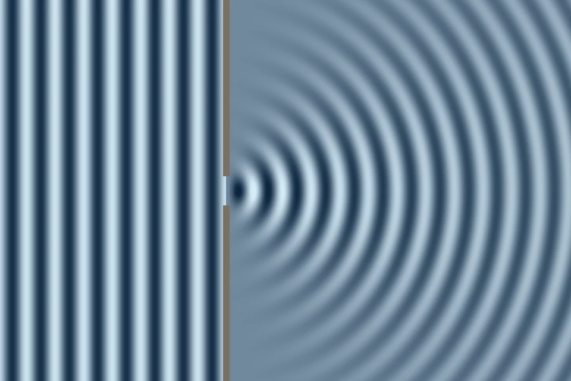

A wave meets an obstacle or a gap
Why do waves reach the corners of a harbour through the narrow gap in a breakwater, and do not travel only straight to the place opposite the gap?
Prior knowledge
- The wavelength $\lambda$ is the distance between two successive wave crestschapter How waves form and travel
- The speed, frequency and wavelength of a wave are related: $v = f\lambda$chapter How waves form and travel
Think about it
On a stormy day waves roll in from the open sea towards a harbour in straight rows. The breakwater has only a narrow gap for ships, and the harbour basin behind the gap is wider than the gap. Still, the waves also rock boats that are moored at a quay in a corner of the basin, far to the side of the gap. The waves, on the other hand, bounce off the wall of the breakwater back out to sea.
How does a wave behave when it meets a wall or a narrow gap?
Review: wavelength and frequency
Predict
Prediction 1: the angle from the wall
More predictions 2 questions
Prediction 2: the fixed end of a rope
Prediction 3: a narrower slit
Investigate
Simulation
How to use
Choose Situation. In the rope situations Start sends a pulse that travels to the end of the rope and back; the readings show the displacement $y_\text{r}$ of the reflected pulse once the pulse has left the end. In the basin situations the waves move all the time, and Stop freezes the picture. In the wall situation adjust the angle of incidence $\alpha$: the crests of the incoming wave are drawn with blue lines and those of the reflected wave with green. In the slit and obstacle situations adjust the wavelength $\lambda$ and the width $b$ of the slit or obstacle. Light areas are wave crests, dark ones troughs. Show wavelets draws the Huygens wavelets that start from the points of the wall or the slit. A slider affects only the situations in which its quantity is used. Speed changes only the pace of the animation.
Assumptions of the model
The rope is $5.0\,\text{m}$ long, the pulse travels at a speed of $2.0\,\text{m/s}$ without damping, and the pulse displacement $3.0\,\text{cm}$ is drawn enlarged. The fixed end does not move at all, and the ring at the free end slides without friction. The basin is $30\,\text{cm} \cdot 20\,\text{cm}$ and the water is equally deep everywhere, so the speed of the wave does not change. The wall reflects the wave completely. In the slit and obstacle situations the wave reflected back from the obstacle is not drawn. The pace of the animation is slowed down, and the numbers are values calculated by the model.
How the calculation works
Rope: the effect of the end is calculated with an imaginary mirror pulse that comes from behind the end towards the real one. At a fixed end the mirror pulse has the opposite sign, so the displacement of the end is always zero. At a free end it has the same sign, so the end swings for a moment to twice the displacement.\n\nWall: the incoming front reaches two points of the wall, a distance $d$ apart, at different moments. When the front reaches the latter, the radius of the wavelet that started from the former is $r = d \sin\alpha$. The reflected front touches the wavelet, so $\sin\beta = \tfrac{r}{d}$.\n\nSlit and obstacle: wavelet sources are placed at the slit at intervals of at most $\tfrac{\lambda}{8}$, and the height of the water surface at each point is the sum of their wavelets. The spreading angle $\theta$ is the angle from the straight-ahead direction to the direction in which the amplitude of the wave far from the slit has dropped to half. If the amplitude does not drop to half in any direction, $\theta = 90^\circ$. The obstacle is calculated as the difference between a plane wave and the wave of a slit as wide as the obstacle, and the point $P$ is $8.0\,\text{cm}$ behind the obstacle.
Choose a situation: a rope pulse, waves and a wall, waves and a slit, or waves and an obstacle. In the basin situations you look at the water from above.
Experiment 1: angle of incidence and angle of reflection
Test prediction 1. The situation is waves and a wall. Change the angle of incidence $\alpha$ and record the angle of reflection and the angle between the reflected ray and the surface at at least two angles of incidence. Also try the angle of incidence at which the ray makes an angle of $30^\circ$ with the surface. Turn Show wavelets on and see where the envelope of the wavelets lies.
- Initial state
- situation: waves and a wall, wavelength $\lambda$ = $2\,\text{cm}$, angle of incidence $\alpha$ = $30^\circ$
- Kept constant
- situation, wavelength $\lambda$
- Varied
- angle of incidence $\alpha$
| angle of incidence $\alpha$ | β $(^\circ)$ | angle from the surface $(^\circ)$ |
|---|
More to investigate 4 tasks
Experiment 2: fixed and free end
Test prediction 2. Press Start and wait for the pulse to return. Record the displacement of the reflected pulse when the end is fixed. Then change the situation to the free end, press Start again and record again. Also watch what the end of the rope does as the pulse turns.
- Initial state
- situation: rope, fixed end
- Kept constant
- nothing
- Varied
- situation
| situation | $y_r$ $(\text{cm})$ |
|---|
Experiment 3: width of the slit
Test prediction 3. The situation is waves and a slit, and the wavelength stays at $2.0\,\text{cm}$. Narrow the slit and record the spreading angle at at least two widths, for example $8.0\,\text{cm}$, $4.0\,\text{cm}$, $2.0\,\text{cm}$ and $1.0\,\text{cm}$. The dashed lines show the angle $\theta$ within which the wave is strong.
- Initial state
- situation: waves and a slit, wavelength $\lambda$ = $2\,\text{cm}$, slit width $b$ = $8\,\text{cm}$
- Kept constant
- situation, wavelength $\lambda$
- Varied
- slit width $b$
| slit width $b$ | $b/\lambda$ | $\theta$ $(^\circ)$ |
|---|
Optional Experiment 4: wavelength with the same slit
The width of the slit stays at $3.0\,\text{cm}$. Change the wavelength and record the spreading angle at at least two wavelengths. Compare with the results of experiment 3: at which slit width and wavelength do you get the same angle?
- Initial state
- situation: waves and a slit, wavelength $\lambda$ = $1\,\text{cm}$, slit width $b$ = $3\,\text{cm}$
- Kept constant
- situation, slit width $b$
- Varied
- wavelength $\lambda$
| wavelength $\lambda$ | $b/\lambda$ | $\theta$ $(^\circ)$ |
|---|
Conclusion: reflection and bending
Write on the basis of your tables: how does the angle of reflection depend on the angle of incidence when both are measured from the normal? How is a pulse reflected from a fixed and from a free end? How does the spreading of a wave behind a slit depend on the width of the slit?
Model answer
The angle of reflection was equal to the angle of incidence every time, for example $\alpha = 30^\circ$ and $\beta = 30^\circ$ as well as $\alpha = 60^\circ$ and $\beta = 60^\circ$. The angle measured from the surface was $90^\circ - \beta$, so the angle measured from the surface cannot be used as the angle of incidence. From the fixed end the pulse returned inverted, $y_\text{r} = -3.0\,\text{cm}$, and from the free end not inverted, $+3.0\,\text{cm}$. When the wavelength was $2.0\,\text{cm}$, the spreading angle grew from $8.7^\circ$ to $90^\circ$ as the slit narrowed from $8.0\,\text{cm}$ to $1.0\,\text{cm}$: when the slit is clearly narrower than the wavelength ($b < \lambda$), the wave spreads over the whole area behind the slit, and already when $b \approx \lambda$, the spreading is large. The values are calculated by the model.
Assess your own answer
Tick the points your own answer already contains.
Theory
Key idea
Wavefront and ray
A wave is easiest to describe from above. A wavefront is a line that joins the points of a wave that are in the same phase, for example one wave crest. The distance between two successive crests is the wavelength $\lambda$ (chapter How waves form and travel). A ray is an arrow that shows the direction of travel of the wave, and it is always perpendicular to the wavefront. A wave with straight fronts is a plane wave, and a point source, such as a stone dropped into water, sends out a circular wave whose rays point away from the source in every direction.
Reflection from the end of a rope
When a wave arrives at a boundary of the medium, it is reflected: part of it or the whole wave returns. In a rope you can see this from a single pulse. If the end of the rope is tied to a wall, the end cannot move. An upward pulse pulls the fastening up, and the wall pulls the rope down with an equally large force. So a pulse reflected from a fixed end is inverted: it returns pointing downwards. If the end of the rope is a ring that slides without friction along a rod, the end swings up with the pulse and nothing pulls it down. A pulse reflected from a free end is not inverted but returns with the same sign.
Huygens' principle
In the 17th century the Dutchman Christiaan Huygens presented a principle with which the propagation of a wave can be worked out by drawing. According to Huygens' principle, every point of a wavefront acts as the source of a new small circular wave, a wavelet. The wavelets travel at the same speed as the original wave, and after a moment the new wavefront is the line that touches all the wavelets, their envelope. In open water the envelope of the wavelets is again a straight line, so a plane wave continues straight. When part of the front stops at an obstacle or bounces off a wall, the remaining wavelets tell where the wave goes.
Diffraction
When a wave passes through a slit or past an obstacle, it also bends behind the obstacle, into the region that a straight ray does not reach. This is called diffraction, or bending of the wave. Huygens' principle explains it: the points of the front at the slit are sources of wavelets, and the wavelets of the outermost points spread sideways. The width of the slit is denoted by $b$. If the slit is many wavelengths wide, the front continues almost straight at the slit and curves only at the edges. When the slit is clearly narrower than the wavelength, that is $b < \lambda$, the wavelets at the slit are as if from one point, and the wave spreads as a semicircle over the whole area behind the slit. Already when the slit is about as wide as the wavelength, $b \approx \lambda$, the wave spreads a lot.

The same holds for an obstacle. An obstacle narrower than the wavelength, like a pier post, leaves hardly any shadow behind it, because the wave bends around it. Behind an obstacle much wider than the wavelength there is a sheltered region. So diffraction is strong when the width of the slit or obstacle is of the order of the wavelength or smaller. Sound bends from a door into a corridor, because the wavelength of speech is of the order of a metre, as wide as the doorway.
Law of reflection
When a wave hits a flat surface, such as a wall or a sea wall, the normal of the surface, that is the line perpendicular to the surface, is drawn at the point of impact. Angles are always measured from the normal: the angle of incidence is the angle between the incoming ray and the normal, and the angle of reflection is the angle between the reflected ray and the normal. The law of reflection is
$$\beta = \alpha$$
where $\alpha$ is the angle of incidence and $\beta$ the angle of reflection. In addition, the incoming ray, the reflected ray and the normal are in the same plane, and the reflected ray is on the other side of the normal from the incoming one. The angle between the ray and the surface is $90^\circ - \alpha$, and it is not used as the angle of incidence.
Huygens' principle explains why the angles are equal. The front $AB$ of a plane wave hits the wall obliquely, so its point $A$ touches the wall first. A wavelet starts from it while the other end $B$ of the front is still some distance away. When $B$ arrives at the wall at point $C$, the wavelet that started from $A$ has travelled the same distance, because the speed is the same. The reflected front $CD$ touches the wavelets. The triangles $ABC$ and $CDA$ are congruent: they have the common side $AC$, equally long sides $BC$ and $AD$, and a right angle at $B$ and $D$. So the fronts make equal angles with the wall. The angle between the front and the wall is equal to the angle between the ray and the normal, so $\beta = \alpha$.
Common misconception
The most common error is to measure the angle of incidence from the surface and not from the normal. If a ray makes an angle of $30^\circ$ with the wall, the angle of incidence is not $30^\circ$ but $90^\circ - 30^\circ = 60^\circ$. So always draw the normal at the point of impact first. Another error is to think that a wave bends only at a very narrow slit and a wide slit lets it through completely straight. There is diffraction at every slit and at the edge of every obstacle, but it shows clearly only when the width of the slit is of the order of the wavelength. A third error is to think that a fixed end damps the pulse. From a rigid fastening the pulse is reflected almost completely, but inverted.
Summary
- A wavefront joins the points that are in the same phase, and a ray shows the direction of travel perpendicular to the front.
- The law of reflection: $\beta = \alpha$, when the angle of incidence and the angle of reflection are measured from the normal of the surface.
- From the fixed end of a rope the pulse is reflected inverted, from the free end not inverted.
- Huygens' principle: every point of a wavefront is the source of a wavelet, and the new front touches the wavelets. The principle explains reflection and diffraction.
- Diffraction, the bending of a wave behind a slit or an obstacle, is strong when the width of the slit or obstacle is about the wavelength or smaller.
Optional Return to your predictions
Compare your predictions with the values of the simulation and with Huygens' principle. Then return to the opening question: why do the waves reach the corners of the harbour through the gap in the breakwater? What would you need to know about the wavelength and the width of the gap to predict how much the waves spread?
Would you change your prediction?
Examples
Example 1: Waves at a breakwater
Sea waves approach a straight breakwater so that the wavefronts make an angle of $50^\circ$ with the wall of the breakwater. What are the angle of incidence and the angle of reflection of the waves, and what angle is left between the direction of travel of the reflected waves and the wall of the breakwater?
Step 1/7
Given and find. The angle between the wavefront and the wall is $\varphi = 50^\circ$.
We are asked for the angle of incidence $\alpha$, the angle of reflection $\beta$, and the angle $\gamma$ between the reflected ray and the surface of the wall.
Step 2/7
Principle. A ray is perpendicular to the wavefront and the normal is perpendicular to the wall. When both lines are turned through $90^\circ$, the angle between them does not change, so the angle between the ray and the normal is the same as the angle between the front and the wall.
By the law of reflection the angle of reflection is equal to the angle of incidence when both are measured from the normal.
Step 3/7
Formula solved.
$$\begin{aligned} \alpha &= \varphi \\ \beta &= \alpha \\ \gamma &= 90^\circ - \beta \end{aligned}$$
Step 4/7
Unit conversions. Not needed: all angles are in degrees.
Step 5/7
Substitution. $$\begin{aligned} \alpha &= 50^\circ \\ \beta &= 50^\circ \\ \gamma &= 90^\circ - 50^\circ = 40^\circ \end{aligned}$$
Step 6/7
Result. The angle of incidence and the angle of reflection are $50^\circ$, and the reflected waves travel at an angle of $40^\circ$ to the wall of the breakwater. The angles are given in whole degrees like the given $50^\circ$.
Step 7/7
Reasonableness. If the fronts were parallel to the wall, that is $\varphi = 0^\circ$, the waves would arrive perpendicularly and return along the same path, $\alpha = \beta = 0^\circ$. As $\varphi$ grows, the waves arrive more and more obliquely. In addition $\alpha + \gamma = 90^\circ$, as it should for the right angle between the normal and the surface.
Example 2: Find the error
Example 3: Apply to a new situation
In a corner of a harbour two straight concrete walls meet at a right angle. A wave first hits wall 1 at an angle of incidence of $35^\circ$, is reflected and then hits wall 2.
What is the angle of incidence at wall 2? Answer in degrees.
Hint 1: a guiding question
Draw a normal of its own at each point of impact. Which wall is the normal of wall 1 parallel to?
Hint 2: what is the connection
The normal of wall 1 is parallel to wall 2, because the walls are perpendicular. The reflected ray makes an angle $\beta_1 = 35^\circ$ with the normal of wall 1, so also $35^\circ$ with the surface of wall 2.
Hint 3: an intermediate step
The angle of incidence at wall 2 is measured from the normal of wall 2: $\alpha_2 = 90^\circ - 35^\circ$.
Show the solution
Given
the walls are perpendicular to each other, angle of incidence at wall 1 $\alpha_1 = 35^\circ$
Find
the angle of incidence at wall 2, $\alpha_2$ in degrees
Principle
By the law of reflection $\beta_1 = \alpha_1$ when the angles are measured from the normal. Because the walls are perpendicular, the normal of wall 1 is parallel to wall 2. So the angle between the reflected ray and the surface of wall 2 is $\beta_1$, and the angle of incidence at wall 2 is its complementary angle.
Formula
$\beta_1 = \alpha_1$ and $\alpha_2 = 90^\circ - \beta_1$, so $\alpha_2 = 90^\circ - \alpha_1$
Conversions
Not needed: the angles are in degrees.
Substitution
Answer
$55^\circ$
In whole degrees like the given $35^\circ$.
Reasonableness
The angles $\alpha_1$ and $\alpha_2$ add up to $90^\circ$. At wall 2 the wave is reflected at an angle of $55^\circ$, and each reflection turns the ray through the angle $180^\circ - 2\alpha$, so the whole turn is $(180^\circ - 2 \cdot 35^\circ)$ $+ (180^\circ - 2 \cdot 55^\circ)$ $= 110^\circ + 70^\circ$ $= 180^\circ$: the wave returns from the corner against its direction of arrival, as it should in a corner reflector.
Review the chapter's concepts
Cards you mark Review later collect in your review deck.
- Reflection
- A wave changes direction at a boundary so that it returns into the original medium.
- Diffraction
- A wave bends and spreads at the edge of an obstacle or a narrow opening.
Exercises
- Exercise 11-2CoreBasic
A wave coming from the sea hits the flat wall of a quay. The angle between the incoming ray and the surface of the wall is $20^\circ$.
What is the angle of incidence of the wave?
Answer
$70^\circ$
Show the solution
Given
the angle between the incoming ray and the surface of the wall $\gamma = 20^\circ$
Find
the angle of incidence $\alpha$ in degrees
Principle
The angle of incidence is measured from the normal of the surface, not from the surface. The normal is perpendicular to the surface, so the angle between the ray and the surface and the angle between the ray and the normal add up to $90^\circ$.
Formula
$\alpha + \gamma = 90^\circ$, so $\alpha = 90^\circ - \gamma$
Conversions
Not needed: the angles are in degrees.
Substitution
$\alpha$$= 90^\circ - 20^\circ$$= 70^\circ$Answer
$70^\circ$
In whole degrees like the given angle $20^\circ$.
Reasonableness
The ray arrives at a shallow angle, almost along the wall, so its angle from the normal is large. As the angle measured from the surface gets small, the angle of incidence approaches $90^\circ$, as it should.
- Exercise 11-6CoreBasic
One end of a rope is tied firmly to a wall. An upward pulse is sent from the free end of the rope; it travels to the wall and is reflected from it.
Which statement about the return of the pulse is correct?
Answer
The pulse returns downwards, because the wall pulls the end of the rope down.
Show the solution
Find
how an upward pulse returns from the fixed end of the rope
Principle
An end tied to a wall cannot move. When the pulse arrives at the end, the rope tries to lift it up, and the wall responds by pulling the rope downwards. This force of the wall creates the reflected pulse.
Model answer
The pulse returns downwards, that is, inverted. The wall pulls the end of the rope down, so the reflected pulse starts back in the opposite direction to the incoming one.
The speed of the pulse does not change, because it is determined by the rope, and the pulse is reflected almost completely, because a rigid fixing does not damp it. The claim that the pulse returns upwards would describe a free end, and the claim that the pulse disappears is not true.
- Exercise 11-7CoreBasic
In a ripple tank a plane wave passes through a gap in a barrier. The wavelength is $4.0\,\text{cm}$ and the width of the gap is $3.0\,\text{cm}$. The frequency is doubled, and the speed of the wave in the tank stays the same.
Which statement about the bending of the wave behind the gap is correct?
Answer
The bending weakens, because the wavelength becomes shorter compared with the width of the gap.
Show the solution
Find
how doubling the frequency changes the bending of the wave behind the gap
Principle
The speed of the wave stays the same, so by the equation $v = f\lambda$ the wavelength decreases when the frequency increases. Diffraction is the stronger, the narrower the gap is compared with the wavelength.
Model answer
The new wavelength is half of the old one, that is, $2.0\,\text{cm}$. The width of the gap compared with the wavelength grows from the ratio $\tfrac{3.0\,\text{cm}}{4.0\,\text{cm}} = 0.75$ to the ratio $\tfrac{3.0\,\text{cm}}{2.0\,\text{cm}} = 1.5$. The gap is thus relatively wider, and the bending weakens, although it is still clear, because the gap is still of the order of the wavelength.
The strength of the bending is not affected by the energy of the wave, and the width of the gap alone does not decide it, but how wide the gap is compared with the wavelength. The wave passes through the gap at both frequencies.
- Exercise 11-15CoreApplied
In a ripple tank a plane wave is reflected from a straight wall. From a photograph it is measured that the incoming and the reflected ray form an angle of $64^\circ$ with each other.
The student reasons: “The angle of incidence is the angle between the incoming and the reflected ray, so $\alpha = 64^\circ$.”
Find the student’s error and calculate the correct angle of incidence.
Answer
$32^\circ$
Show the solution
Given
the angle between the incoming and the reflected ray $\varphi = 64^\circ$
Find
the error of the student and the correct angle of incidence $\alpha$
Principle
The error of the student is to take the angle between the incoming and the reflected ray as the angle of incidence. The angle of incidence is measured between the incoming ray and the normal, and the angle of reflection between the reflected ray and the normal.
The normal divides the angle between the rays into these two parts, so $\varphi = \alpha + \beta$. By the law of reflection $\beta = \alpha$.
Formula
$\varphi = \alpha + \beta = 2\alpha$, so $\alpha = \dfrac{\varphi}{2}$
Conversions
Not needed: the angle is in degrees.
Substitution
$\alpha$$= \dfrac{64^\circ}{2}$$= 32^\circ$Answer
$32^\circ$
Two significant figures like the given angle $64^\circ$.
Reasonableness
The angle of incidence and the angle of reflection are both $32^\circ$, so their sum is $64^\circ$ like the measured angle. The $64^\circ$ of the student would make the angle between the rays $128^\circ$.
Level 1 · basic practice 5 exercises
- Exercise 11-1
In a ripple tank a plane wave hits the wall of the tank at an angle of incidence of $35^\circ$. What is the angle of reflection?
Answer
$35^\circ$
Show the solution
Given
a straight wall, angle of incidence $\alpha = 35^\circ$
Find
the angle of reflection $\beta$ in degrees
Principle
The wall is straight and reflects the wave, so the law of reflection holds: the angle of reflection is equal to the angle of incidence when both are measured from the normal of the wall. The angle of incidence is given already measured from the normal.
Formula
$\beta = \alpha$
Conversions
Not needed: the angle is in degrees.
Substitution
$\beta = 35^\circ$
Answer
$35^\circ$
In whole degrees like the angle of incidence $35^\circ$.
Reasonableness
The reflected ray is on the other side of the normal at the same angle, and the angle is between $0^\circ$ and $90^\circ$, as an angle measured from the normal should be.
- Exercise 11-3
The wave maker of a ripple tank makes waves at a frequency of $8.0\,\text{Hz}$, and the waves travel at a speed of $0.24\,\text{m/s}$.
What is the wavelength? Give the answer in centimetres.
Answer
$3.0\,\text{cm}$
Show the solution
Given
frequency $f = 8.0\,\text{Hz}$, speed of the wave $v = 0.24\,\text{m/s}$
Find
the wavelength $\lambda$ in centimetres
Principle
In the time of one period a wave travels a distance of one wavelength, so the speed, frequency and wavelength are related by the basic equation of wave motion (chapter How waves form and travel).
Formula
$v = f\lambda$, so $\lambda = \dfrac{v}{f}$
Conversions
The result comes out in metres, and finally $1\,\text{m} = 100\,\text{cm}$.
Substitution
$\lambda$$= \dfrac{0.24\,\text{m/s}}{8.0\,\text{Hz}}$$= 0.030\,\text{m}$$= 0.030 \cdot 100\,\text{cm}$$= 3.0\,\text{cm}$Answer
$3.0\,\text{cm}$
Two significant figures like the speed and the frequency.
Reasonableness
The crests of waves in a ripple tank are a few centimetres apart. Check: $$8.0\,\text{Hz} \cdot 0.030\,\text{m} = 0.24\,\text{m/s}\text{,}$$ and the unit $\tfrac{\text{m/s}}{\text{1/s}} = \text{m}$.
- Exercise 11-4
The end of a rope is tied to a ring that slides without friction along a vertical rod. An upward pulse is sent along the rope, and it is reflected at the ring.
In which direction does the displacement of the reflected pulse point, and why?
Answer
Upwards: a free end does not invert the pulse.
Show the solution
Find
the direction of the displacement of the reflected pulse and the reason for it
Principle
A ring that slides without friction along a rod is the free end of the rope: nothing prevents it from moving vertically, and the rod cannot pull the rope up or down.
Model answer
The displacement of the reflected pulse points upwards, so the pulse returns not inverted. When the upward pulse arrives at the ring, the ring rises with the pulse and swings for a moment higher than usual.
Nothing pulls it down, so the rope returns to its equilibrium position in the same way as it rose, and the pulse starts back with the same sign. If the end were tied to a wall, the wall would pull the rope down and the pulse would be inverted.
- Exercise 11-5
A hiker shouts on the shore of a lake, and the echo from the cliff wall on the opposite shore is heard $1.4\,\text{s}$ later. The speed of sound in air is $343\,\text{m/s}$.
How far away is the cliff wall?
Answer
$240\,\text{m}$
Show the solution
Given
delay of the echo $t = 1.4\,\text{s}$, speed of sound $v = 343\,\text{m/s}$
Find
the distance $d$ to the cliff wall in metres
Principle
Sound travels at a steady speed to the wall, is reflected from it and returns. So during the delay of the echo the sound travels a distance of $2d$.
Formula
$2d = v t$, so $d = \dfrac{v t}{2}$
Conversions
Not needed: the speed is in m/s and the time in seconds.
Substitution
$d$$= \dfrac{343\,\text{m/s} \cdot 1.4\,\text{s}}{2}$$= \dfrac{480.2\,\text{m}}{2}$$= 240.1\,\text{m}$Answer
$240\,\text{m}$
Or $2.4 \cdot 10^2\,\text{m}$, two significant figures like the delay $1.4\,\text{s}$.
Reasonableness
Sound travels about a third of a kilometre per second, so in $1.4\,\text{s}$ about $0.48\,\text{km}$; half of that is about $0.24\,\text{km}$. Across a lake to the opposite shore that is a believable distance.
- Exercise 11-8
The sonar of a fishing boat sends an ultrasound pulse towards the bottom of a lake. The bottom is at a depth of $36\,\text{m}$, and the speed of sound in water is $1500\,\text{m/s}$.
How long after the pulse is sent does the echo return? Give the answer in milliseconds.
Answer
$48\,\text{ms}$
Show the solution
Given
depth of the bottom $d = 36\,\text{m}$, speed of sound in water $v = 1500\,\text{m/s}$
Find
the delay of the echo $t$ in milliseconds
Principle
The pulse travels at a steady speed to the bottom, is reflected and returns. During the delay it thus travels a distance of $2d$.
Formula
$2d = v t$, so $t = \dfrac{2d}{v}$
Conversions
The result comes out in seconds, and finally $1\,\text{s} = 1000\,\text{ms}$.
Substitution
$t$$= \dfrac{2 \cdot 36\,\text{m}}{1500\,\text{m/s}}$$= \dfrac{72\,\text{m}}{1500\,\text{m/s}}$$= 0.048\,\text{s}$$= 0.048 \cdot 1000\,\text{ms}$$= 48\,\text{ms}$Answer
$48\,\text{ms}$
Two significant figures like the depth $36\,\text{m}$.
Reasonableness
Check:
$1500\,\text{m/s} \cdot 0.048\,\text{s}$$= 72\,\text{m}$$= 2 \cdot 36\,\text{m}$$1500\,\text{m/s} \cdot 0.048\,\text{s}$$= 72\,\text{m}$$= 2 \cdot 36\,\text{m}$In air the same distance would take $\tfrac{72\,\text{m}}{343\,\text{m/s}} \approx 0.21\,\text{s}$, so in water the echo returns $4.4$ times faster, because sound travels $4.4$ times faster in water than in air.
Level 2 · applied practice 9 exercises
- Exercise 11-9
A plane wave hits a flat wall at an angle of incidence of $30^\circ$. The wavefront touches the wall first at point $A$ and a little later at point $B$, which is $0.60\,\text{m}$ from $A$. The speed of the wave is $0.40\,\text{m/s}$.
How long does it take before the same front reaches point $B$?
Answer
$0.75\,\text{s}$
Show the solution
Given
angle of incidence $\alpha = 30^\circ$, distance between points $A$ and $B$ on the wall $d = 0.60\,\text{m}$, speed of the wave $v = 0.40\,\text{m/s}$
Find
the time $\Delta t$ that the front needs to go from $A$ to $B$
Principle
When the front touches point $A$, the point of the front that hits $B$ is still a distance $s$ from the wall along the ray.
The front is perpendicular to the ray, so the distance $s$ is a leg of a right triangle whose hypotenuse is $d$ and whose opposite angle is $\alpha$, as in the Huygens construction.
Formula
$s = d \sin\alpha$ and $s = v\,\Delta t$, so $\Delta t = \dfrac{d \sin\alpha}{v}$
Conversions
Not needed: the distance is in metres and the speed in m/s.
Substitution
$\Delta t$$= \dfrac{0.60\,\text{m} \cdot \sin 30^\circ}{0.40\,\text{m/s}}$$= \dfrac{0.30\,\text{m}}{0.40\,\text{m/s}}$$= 0.75\,\text{s}$Answer
$0.75\,\text{s}$
Two significant figures like the distance $0.60\,\text{m}$ and the speed $0.40\,\text{m/s}$.
Reasonableness
At perpendicular incidence ($\alpha = 0^\circ$) the front would touch the whole wall at the same time, $\Delta t = 0$. If the wave travelled along the wall,
$\Delta t$$= \tfrac{0.60\,\text{m}}{0.40\,\text{m/s}}$$= 1.5\,\text{s}$The result lies between these.
- Exercise 11-10
A rope $8.0\,\text{m}$ long is stretched across a yard, and one end is tied to a tree. A pulse is sent from the other end of the rope, and the reflected pulse returns to the starting point $3.2\,\text{s}$ later.
What is the speed of the pulse in the rope?
Answer
$5.0\,\text{m/s}$
Show the solution
Given
length of the rope $L = 8.0\,\text{m}$, time to return to the starting point $t = 3.2\,\text{s}$
Find
the speed $v$ of the pulse
Principle
The pulse travels at a steady speed along the rope to the tree, is reflected from the fixed end and returns along the same rope. Reflection inverts the pulse but does not change its speed, so in the time $t$ the pulse travels a distance of $2L$.
Formula
$2L = v t$, so $v = \dfrac{2L}{t}$
Conversions
Not needed: the length is in metres and the time in seconds.
Substitution
$v$$= \dfrac{2 \cdot 8.0\,\text{m}}{3.2\,\text{s}}$$= \dfrac{16\,\text{m}}{3.2\,\text{s}}$$= 5.0\,\text{m/s}$Answer
$5.0\,\text{m/s}$
Two significant figures like the length and the time.
Reasonableness
If only $8.0\,\text{m}$ were taken as the distance, the speed would be half, $2.5\,\text{m/s}$. The pulse travels $8\,\text{m}$ in each direction in about one and a half seconds, which suits a taut rope.
- Exercise 11-11
You stand in a narrow canyon between two vertical cliff walls and clap your hands once. The first echo is heard $0.40\,\text{s}$ and the second $0.70\,\text{s}$ after the clap. The speed of sound is $343\,\text{m/s}$.
How far apart are the walls?
Answer
$190\,\text{m}$
Show the solution
Given
delay of the first echo $t_1 = 0.40\,\text{s}$, of the second $t_2 = 0.70\,\text{s}$, speed of sound $v = 343\,\text{m/s}$
Find
the distance $D$ between the walls
Principle
Each echo is sound that has travelled to its own wall and been reflected back. The nearer wall gives the first echo. The distance to each wall is half of the distance travelled by the sound, and the walls are on opposite sides of the listener, so the distances are added.
Formula
$d_1 = \dfrac{v t_1}{2}$,
$d_2$$= \dfrac{v t_2}{2}$$D$$= d_1 + d_2$$= \dfrac{v (t_1 + t_2)}{2}$Conversions
Not needed: the speed is in m/s and the times in seconds.
Substitution
$D$$= \dfrac{343\,\text{m/s} \cdot (0.40\,\text{s} + 0.70\,\text{s})}{2}$$= \dfrac{343\,\text{m/s} \cdot 1.10\,\text{s}}{2}$$= 188.65\,\text{m}$Answer
$190\,\text{m}$
Or $1.9 \cdot 10^2\,\text{m}$, two significant figures like the delays $0.40\,\text{s}$ and $0.70\,\text{s}$.
Reasonableness
The walls are $68.6\,\text{m}$ and $120\,\text{m}$ away; the farther one gives the later echo, as it should. Without halving the result would be about $380\,\text{m}$, which would be the whole round trip of the sound and not the distance between the walls.
- Exercise 11-12
The doorway of a classroom is $0.90\,\text{m}$ wide, and the speed of sound is $343\,\text{m/s}$.
At what frequency of sound is the wavelength equal to the width of the doorway?
Answer
$380\,\text{Hz}$
Show the solution
Given
width of the doorway $b = 0.90\,\text{m}$, speed of sound $v = 343\,\text{m/s}$
Find
the frequency $f$ at which the wavelength is $\lambda = b$
Principle
The speed, frequency and wavelength of sound are related by the equation $v = f\lambda$ (chapter How waves form and travel). Set the wavelength equal to the width of the opening and solve for the frequency.
Formula
$v = f\lambda$ and $\lambda = b$, so $f = \dfrac{v}{b}$
Conversions
Not needed: the speed is in m/s and the width in metres, so the result is in hertz.
Substitution
$f$$= \dfrac{343\,\text{m/s}}{0.90\,\text{m}}$$= 381.1\,\text{Hz}$Answer
$380\,\text{Hz}$
Or $3.8 \cdot 10^2\,\text{Hz}$, two significant figures like the width $0.90\,\text{m}$.
Reasonableness
The frequency is in the range of the human voice, so the wavelength of speech is of the order of the doorway and speech bends from the door into the corridor. At lower frequencies than this the wavelength is longer than the opening and the bending is even stronger.
- Exercise 11-13
A student stands in front of a long wall of the school. An app on a phone plays a short beep and measures the time $t$ from the play command to the moment when it detects the echo returning from the wall. The student repeats the measurement at different distances $d$ from the wall.
The sound playback of the phone has an unknown but always equal delay $t_0$ between the play command and the departure of the sound, so every measured time $t$ is too long by the same amount (example data).
Determine the speed of sound using the first and the last measurement of the table. Give the answer in the unit $\text{m/s}$.
The delay of the echo measured by the app at different distances $d\,(\text{m})$ $t\,(\text{s})$ 20.0 0.157 40.0 0.274 60.0 0.390 80.0 0.507 Answer
$343\,\text{m/s}$
Show the solution
Given
first measurement $d_1 = 20.0\,\text{m}$, $t_1 = 0.157\,\text{s}$; last measurement $d_4 = 80.0\,\text{m}$, $t_4 = 0.507\,\text{s}$; the sound playback of the phone has an unknown but constant delay $t_0$ between the play command and the departure of the sound, so every measured time is too long by the same amount
Find
the speed of sound $v$
Principle
The sound travels to the wall and back, a distance of $2d$. The time measured by the app is the travel time of this plus the unknown constant delay $t_0$.
When the difference of the times of two measurements is taken, the same delay cancels, and only the extra distance $2(d_4 - d_1)$ remains, which the sound travels during the time $t_4 - t_1$.
Formula
$t = \dfrac{2d}{v} + t_0$, so $t_4 - t_1 = \dfrac{2(d_4 - d_1)}{v}$ and $v = \dfrac{2(d_4 - d_1)}{t_4 - t_1}$
Conversions
Not needed: the distances are in metres and the times in seconds.
Substitution
$$ \begin{aligned} v &= \frac{2 \cdot (80.0 - 20.0)\,\text{m}}{(0.507 - 0.157)\,\text{s}} \\ &= \frac{120\,\text{m}}{0.350\,\text{s}} \\ &= 342.86\,\text{m/s} \end{aligned} $$
Answer
$343\,\text{m/s}$
Three significant figures like the times.
Reasonableness
The constant delay is
$t_0$$= 0.157\,\text{s} - \tfrac{40.0\,\text{m}}{342.86\,\text{m/s}}$$\approx 0.040\,\text{s}$which is a believable delay of sound playback for a phone. If the speed were calculated from a single measurement with the formula $\tfrac{2d}{t}$, the last one would give $\tfrac{160\,\text{m}}{0.507\,\text{s}} \approx 316\,\text{m/s}$, too small, because the time contains the constant delay.
The intermediate measurement fits the model:
$\tfrac{80.0\,\text{m}}{342.86\,\text{m/s}} + 0.040\,\text{s}$$= 0.273\,\text{s}$$\tfrac{80.0\,\text{m}}{342.86\,\text{m/s}} + 0.040\,\text{s}$$= 0.273\,\text{s}$when the measured time is $0.274\,\text{s}$.
- Exercise 11-14
Plane waves of frequency $12\,\text{Hz}$ are made in a ripple tank, and they travel at a speed of $0.216\,\text{m/s}$. The waves pass through a gap in a barrier. The width $b$ of the gap is changed, and from each picture it is recorded how the wave spreads behind the gap (example data).
a) Calculate the wavelength.
b) How many times as wide as the wavelength is the gap in the measurement where the wave continued as an almost straight beam?
c) Also calculate the ratio $\tfrac{b}{\lambda}$ of the other gaps and formulate a rule: when does the wave bend strongly behind the gap and when only a little?
Write the result of part b in the answer field.
The wave behind the gap at different gap widths $b\,(\text{cm})$ The wave behind the gap 0.9 in every direction 1.8 in every direction 3.6 spreads clearly 7.2 little bending 14.4 almost a straight beam Answer
$8.0$
Show the solution
Given
frequency $f = 12\,\text{Hz}$, speed $v = 0.216\,\text{m/s}$; gap widths in the table, an almost straight beam at the gap $b = 14.4\,\text{cm}$
Find
a) the wavelength $\lambda$; b) the ratio $\tfrac{b}{\lambda}$ in the measurement where the wave continued almost straight; c) a rule for when the wave bends
Principle
The wavelength is obtained from the equation $v = f\lambda$. The strength of diffraction depends on how wide the gap is compared with the wavelength, so the gap widths of the table should be divided by the wavelength.
Formula
$\lambda = \dfrac{v}{f}$ and the ratio $\dfrac{b}{\lambda}$
Conversions
$\lambda$ comes out in metres, and $1\,\text{m} = 100\,\text{cm}$, so that it can be compared with the gaps.
Substitution
$$ \begin{aligned} \lambda &= \frac{0.216\,\text{m/s}}{12\,\text{Hz}} \\ &= 0.018\,\text{m} = 1.8\,\text{cm} \\ \frac{b}{\lambda} &= \frac{14.4\,\text{cm}}{1.8\,\text{cm}} = 8.0 \end{aligned} $$
Answer
a) $\lambda = 1.8\,\text{cm}$. b) the gap is $8.0$ times as wide as the wavelength, two significant figures like the frequency and the speed. c) The wave bends strongly when $\tfrac{b}{\lambda}$ is at most about $2$, and only a little when the ratio is clearly greater.
Reasonableness
The ratios of the other gaps are $\tfrac{b}{\lambda} = 0.5$; $1.0$; $2.0$ and $4.0$.
The wave spreads in every direction when $\tfrac{b}{\lambda} \leq 1$, bends clearly when the ratio is $2.0$, and bends only a little when the ratio is $4.0$ or greater. c) The ratios $0.5$; $1.0$; $2.0$; $4.0$ and $8.0$ correspond to the observations “in every direction”, “in every direction”, “spreads clearly”, “little bending” and “almost a straight beam”.
The observations of the table thus follow the rule: the wider the gap is compared with the wavelength, the less the wave bends.
- Exercise 11-16
The water in a ripple tank is equally deep everywhere, and plane waves travel in it at a speed of $0.30\,\text{m/s}$ at all frequencies. The waves pass through a slit in an obstacle in four setups in which the frequency $f$ of the wave machine and the width $b$ of the slit vary. The values of the setups are example values.
Setup A: $f = 10\,\text{Hz}$, $b = 6.0\,\text{cm}$.
Setup B: $f = 6.0\,\text{Hz}$, $b = 2.0\,\text{cm}$.
Setup C: $f = 15\,\text{Hz}$, $b = 15\,\text{mm}$.
Setup D: $f = 5.0\,\text{Hz}$, $b = 24\,\text{cm}$.
In which order are the setups by how strongly the wave spreads behind the slit, from the weakest to the strongest?
Answer
Setup D ($\lambda : b = 0.25$), setup A ($0.50$), setup C ($1.3$), setup B ($2.5$).
Show the solution
Find
the order of the setups by how strongly the wave spreads behind the slit, from the weakest to the strongest.
Principle
The strength of diffraction depends on how wide the slit is compared with the wavelength. When the slit is many wavelengths wide, the wave continues almost straight and bends only at the edges.
When $b \approx \lambda$ or $b < \lambda$, the wave spreads a lot. So we compare the ratio $\lambda : b$: the greater it is, the more strongly the wave spreads. The wavelength is obtained from the basic equation $\lambda = \tfrac{v}{f}$, and the widths are converted to the same unit.
Model answer
The wavelengths are
$\lambda_\text{A} = \dfrac{0.30\,\text{m/s}}{10\,\text{Hz}} = 3.0\,\text{cm}$
$\lambda_\text{B} = \dfrac{0.30\,\text{m/s}}{6.0\,\text{Hz}} = 5.0\,\text{cm}$
$\lambda_\text{C} = \dfrac{0.30\,\text{m/s}}{15\,\text{Hz}} = 2.0\,\text{cm}$
$\lambda_\text{D} = \dfrac{0.30\,\text{m/s}}{5.0\,\text{Hz}} = 6.0\,\text{cm}$
The width of the slit in C is $15\,\text{mm} = 1.5\,\text{cm}$. The ratios are
A: $3.0\,\text{cm} : 6.0\,\text{cm} = 0.50$
B: $5.0\,\text{cm} : 2.0\,\text{cm} = 2.5$
C: $2.0\,\text{cm} : 1.5\,\text{cm} \approx 1.3$
D: $6.0\,\text{cm} : 24\,\text{cm} = 0.25$
By the ratio from the smallest to the greatest, that is, by diffraction from the weakest to the strongest, the order is D, A, C, B. In setup D the slit is four wavelengths wide, so the wave bends only at the edges.
In setups C and B the slit is narrower than the wavelength, and the wave spreads widely behind the slit, most strongly in setup B.
The width of the slit alone does not decide the order: the narrowest slit is in C, but the wave in B spreads more, because its wavelength is greater. The wavelength alone does not decide it either: the wavelength of D is the greatest, but its slit is so wide that it bends the least.
- Exercise 11-17
The figure shows the bottom of a ripple tank seen from above. Plane waves travel from left to right and hit a wall with a gap in it. The wave generator vibrates at a frequency of $4.0\,\text{Hz}$. Read the value you need from the figure.
What is the speed of the wave in the tank? Give the answer in $\text{cm/s}$.
Answer
$32\,\text{cm/s}$
Show the solution
Given
the grid on the bottom of the ripple tank (figure), one square is $2.0\,\text{cm}$, frequency of the wave generator $f = 4.0\,\text{Hz}$
Find
the speed of the wave $v$ in $\text{cm/s}$
Principle
The wavefronts of a plane wave are crests, so the distance between two successive fronts is the wavelength $\lambda$. In the tank the wave travels at a steady speed, and by the basic wave equation $v = f\lambda$.
Reading the graph
To the left of the wall the two wavefronts are on vertical lines $1$ and $5$, so they are $5 - 1 = 4$ squares apart. The wavelength is $4 \cdot 2.0\,\text{cm} = 8.0\,\text{cm}$. The wall and the gap are not needed.
Formula
$v = f\lambda$
Conversions
Squares to centimetres:
$4\ \text{squares}$$= 4 \cdot 2.0\,\text{cm}$$= 8.0\,\text{cm}$Nothing else is needed, because the answer is asked in $\text{cm/s}$.
Substitution
$v$$= 4.0\,\text{Hz} \cdot 8.0\,\text{cm}$$= 4.0\,\text{s}^{-1} \cdot 8.0\,\text{cm}$$= 32\,\text{cm/s}$Answer
$32\,\text{cm/s}$
Two significant figures like the frequency $4.0\,\text{Hz}$ and the wavelength $8.0\,\text{cm}$.
Reasonableness
The period is
$T$$= \tfrac{1}{4.0\,\text{Hz}}$$= 0.25\,\text{s}$and in that time the wave travels $32\,\text{cm/s} \cdot 0.25\,\text{s} = 8.0\,\text{cm}$, one wavelength. A speed of $0.32\,\text{m/s}$ is typical for small ripples in a shallow ripple tank (a few tenths of a metre per second). A water wave with a wavelength of $8.0\,\text{cm}$ cannot have a frequency above about $4.5\,\text{Hz}$, so $4.0\,\text{Hz}$ is possible.
- Exercise 11-18
The figure shows the bottom of a ripple tank seen from above: plane waves travel from left to right and hit a wall with a gap in it. The figure shows the waves before the frequency is changed. Then the frequency of the wave generator is doubled, but assume that the speed of the wave stays the same. Read the values you need from the figure.
How many times is the width of the gap $b$ the new wavelength $\lambda$, that is, what is the ratio $\tfrac{b}{\lambda}$ at the new frequency?
Answer
$3.0$
Show the solution
Given
the grid on the bottom of the ripple tank (figure), one square is $2.0\,\text{cm}$; the frequency doubles, $f' = 2f$, and the speed $v$ is assumed to stay the same
Find
the ratio of the width of the gap to the new wavelength $\tfrac{b}{\lambda'}$ (no unit)
Principle
The task assumes that the speed $v$ of the wave stays the same when the frequency is changed (in a real water tank the speed also depends on the wavelength). With $v$ assumed constant and $v = f\lambda$, doubling the frequency halves the wavelength. The width of the gap does not change.
Reading the graph
To the left of the wall the wavefronts are on vertical lines $1$ and $5$, so
$\lambda$$= 4 \cdot 2.0\,\text{cm}$$= 8.0\,\text{cm}$The edges of the gap are on horizontal lines $1$ and $7$, so the gap is $7 - 1 = 6$ squares wide:
$b$$= 6 \cdot 2.0\,\text{cm}$$= 12\,\text{cm}$Formula
$v = f\lambda = 2f\lambda'$, so
$\lambda'$$= \dfrac{\lambda}{2}$$\dfrac{b}{\lambda'}$$= \dfrac{2b}{\lambda}$Conversions
Squares to centimetres: $4 \cdot 2.0\,\text{cm} = 8.0\,\text{cm}$ and $6 \cdot 2.0\,\text{cm} = 12\,\text{cm}$. In the ratio the units of length cancel.
Substitution
$\lambda'$$= \dfrac{8.0\,\text{cm}}{2}$$= 4.0\,\text{cm}$$\dfrac{b}{\lambda'}$$= \dfrac{12\,\text{cm}}{4.0\,\text{cm}}$$= 3.0$Answer
$3.0$
(no unit), two significant figures like the wavelength $8.0\,\text{cm}$.
Reasonableness
For the waves in the figure the ratio was $\tfrac{12\,\text{cm}}{8.0\,\text{cm}} = 1.5$, and doubling the frequency doubles it, $2 \cdot 1.5 = 3.0$. The gap is now clearly wider than the wavelength, so diffraction weakens and the wave travels more straight ahead.
Level 3 · challenging 5 exercises
- Exercise 11-19
Music is heard from a neighbour's open window, whose width is $0.80\,\text{m}$.
When you walk behind the corner of the house, where you can no longer see the window, the low sound of the bass drum ($100\,\text{Hz}$) is still clearly heard, but the high sound of the cymbal ($5000\,\text{Hz}$) becomes much weaker.
Explain the phenomenon with diffraction and compare the wavelength of each sound with the width of the window. The speed of sound is $343\,\text{m/s}$.
Answer
The wavelength of the bass $\lambda = 3.4\,\text{m}$ is longer than the window ($b/\lambda \approx 0.23$), so it bends strongly; the cymbal's $\lambda \approx 6.9\,\text{cm}$ is much shorter than the window ($b/\lambda \approx 12$), so it travels almost straight.
Show the solution
Find
why a low sound is heard behind the corner but a high one is not, explained with diffraction and wavelengths
Principle
Diffraction is strong when the width of the opening is of the order of the wavelength or smaller, and weak when the opening is many wavelengths wide. The wavelength is obtained from the equation $\lambda = \tfrac{v}{f}$ (chapter How waves form and travel).
Model answer
The wavelength of the bass is $\lambda = \tfrac{343\,\text{m/s}}{100\,\text{Hz}} = 3.43\,\text{m}$, so the window is only about a quarter of a wavelength ($b/\lambda = \tfrac{0.80\,\text{m}}{3.43\,\text{m}} \approx 0.23$). The window then acts like a single source of wavelets, and the sound spreads from the window in every direction, also behind the corner.
The wavelength of the cymbal is $\lambda = \tfrac{343\,\text{m/s}}{5000\,\text{Hz}} \approx 6.9\,\text{cm}$, so the window is about $12$ wavelengths wide. From it the sound continues as an almost straight beam, and bends only a little behind the corner. That is why mostly bass is heard behind the corner.
- Exercise 11-20
In a ripple tank a plane wave hits a flat wall obliquely. On the wall there are two marks $A$ and $B$, $0.40\,\text{m}$ apart. A video shows that the same wave crest reaches mark $B$ $0.50\,\text{s}$ later than mark $A$. The speed of the wave is $0.30\,\text{m/s}$. Determine the angle of incidence of the wave.
Answer
$22^\circ$
Show the solution
Given
distance between the marks $d = 0.40\,\text{m}$, delay $\Delta t = 0.50\,\text{s}$, speed of the wave $v = 0.30\,\text{m/s}$
Find
the angle of incidence $\alpha$ in degrees
Principle
When the crest is at $A$, the point of it that hits $B$ is still a distance $s$ away along the ray, and it travels this distance during the delay.
The front is perpendicular to the ray, so $s$, $d$ and the front form a right triangle whose hypotenuse is $d$ and in which $s$ is the leg opposite the angle of incidence.
Formula
$s = v\,\Delta t$ and $\sin\alpha = \dfrac{s}{d}$, so
$\alpha$$= \sin^{-1}\dfrac{v\,\Delta t}{d}$Conversions
Not needed: the distances are in metres, the speed in m/s and the time in seconds.
Substitution
$s$$= 0.30\,\text{m/s} \cdot 0.50\,\text{s}$$= 0.15\,\text{m}$$\sin\alpha$$= \dfrac{0.15\,\text{m}}{0.40\,\text{m}}$$= 0.375$so $\alpha = 22.02^\circ$
Answer
$22^\circ$
Two significant figures like all the data.
Reasonableness
If the wave arrived perpendicularly, the crest would reach both marks at the same time. If it travelled along the wall, the delay would be $\tfrac{0.40\,\text{m}}{0.30\,\text{m/s}} \approx 1.3\,\text{s}$. The measured $0.50\,\text{s}$ is less than half of this, so the wave arrives fairly steeply, at a small angle of incidence.
- Exercise 11-21
A rope is $6.0\,\text{m}$ long, and its far end is tied to a post.
You send an upward pulse along the rope and after that hold the other end of the rope firmly in place. The speed of the pulse is $4.0\,\text{m/s}$. The pulse is reflected from the post, returns to your hand, is reflected from it and travels again towards the post.
How long after the pulse is sent does it arrive at the post for the second time? Give the answer in seconds.
Answer
$4.5\,\text{s}$
Show the solution
Given
length of the rope $L = 6.0\,\text{m}$, speed of the pulse $v = 4.0\,\text{m/s}$, the pulse is at first upward; both ends are held in place
Find
the time $t$ until the pulse arrives at the post for the second time
Principle
The pulse travels at a steady speed. The post is a fixed end, and a hand holding the rope firmly in place is also a fixed end, so the pulse is inverted in both reflections.
To reach the post for the second time the pulse has travelled three times the length of the rope: to the post, back to the hand and again to the post.
Formula
$3L = v t$, so $t = \dfrac{3L}{v}$
Conversions
Not needed: the length is in metres and the speed in m/s.
Substitution
$t$$= \dfrac{3 \cdot 6.0\,\text{m}}{4.0\,\text{m/s}}$$= \dfrac{18\,\text{m}}{4.0\,\text{m/s}}$$= 4.5\,\text{s}$Answer
$4.5\,\text{s}$
Two significant figures like the length and the speed. In addition, the displacement then points upwards: the post inverted the pulse downwards and the hand back upwards.
Reasonableness
The pulse travels the length of the rope in one direction in $1.5\,\text{s}$, so three trips take $4.5\,\text{s}$. After two inversions the pulse is again in the same direction as at the start, as two successive sign changes should give.
- Exercise 11-22
An angler drives a boat along a straight line on a lake and measures the depth of the bottom with a sonar at six points. The distance between the points is $20.0\,\text{m}$. The sonar sends a pulse straight down, and the delay of the echo is in the table (example data).
The speed of sound in the water of the lake is $1480\,\text{m/s}$. Assume that the pulse travels vertically down and that the bottom is straight between the measurement points.
a) Calculate the depth of the bottom at each point.
b) Between which two successive points is the bottom steepest, and what is the angle of slope of the bottom to the horizontal there?
c) Justify why the depth is obtained from the delay by halving, and why it is worth making additional measurements on a steep slope.
Write the angle of slope of part b in the answer field.
The delay of the echo from the bottom $x\,(\text{m})$ $t\,(\text{ms})$ 0.0 54 20.0 60 40.0 71 60.0 90 80.0 97 100.0 85 Answer
$35^\circ$
Show the solution
Given
delays in the table, distance between the measurement points $\Delta x = 20.0\,\text{m}$, speed of sound $v = 1480\,\text{m/s}$; the pulse travels vertically and the bottom is straight between the points
Find
a) the depth $d$ at each point; b) the angle of slope $\theta$ of the steepest interval to the horizontal; c) justifications
Principle
The pulse travels to the bottom and back, so during the delay it travels a distance of $2d$. The difference $\Delta d$ of the depths of two successive points and the horizontal distance $\Delta x$ of the points form a right triangle whose angle $\theta$ is the slope of the bottom.
The steepest interval is the one where the change of depth is the greatest, because the interval $\Delta x$ is always the same.
Formula
$d$$= \dfrac{v t}{2}$$\tan\theta$$= \dfrac{\Delta d}{\Delta x}$so
$\theta$$= \tan^{-1}\dfrac{\Delta d}{\Delta x}$Conversions
$1\,\text{ms} = 0.001\,\text{s}$, for example $54\,\text{ms} = 0.054\,\text{s}$.
Substitution
a) The depth is
$d$$= \tfrac{1480\,\text{m/s} \cdot t}{2}$$= 740\,\text{m/s} \cdot t$The depths are
$$ \begin{aligned} d_{0} &= 740\,\text{m/s} \cdot 0.054\,\text{s} = 40.0\,\text{m} \\ d_{20} &= 740\,\text{m/s} \cdot 0.060\,\text{s} = 44.4\,\text{m} \\ d_{40} &= 740\,\text{m/s} \cdot 0.071\,\text{s} = 52.5\,\text{m} \\ d_{60} &= 740\,\text{m/s} \cdot 0.090\,\text{s} = 66.6\,\text{m} \\ d_{80} &= 740\,\text{m/s} \cdot 0.097\,\text{s} = 71.8\,\text{m} \\ d_{100} &= 740\,\text{m/s} \cdot 0.085\,\text{s} = 62.9\,\text{m} \end{aligned} $$
b) The changes of depth between the points are $4.4\,\text{m}$; $8.1\,\text{m}$; $14.1\,\text{m}$; $5.2\,\text{m}$ and $-8.9\,\text{m}$. The greatest change is between the points $x = 40\,\text{m}$ and $x = 60\,\text{m}$:
$$ \begin{aligned} \Delta d &= 66.6\,\text{m} - 52.5\,\text{m} \\ &= 14.06\,\text{m} \\ \theta &= \tan^{-1}\frac{14.06\,\text{m}}{20.0\,\text{m}} \\ &= \tan^{-1} 0.703 = 35.1^\circ \end{aligned} $$Answer
the bottom is steepest in the interval $x = 40\,\text{m}$ … $60\,\text{m}$, and its angle of slope is $35^\circ$, two significant figures like the difference of the delays $90\,\text{ms} - 71\,\text{ms} = 19\,\text{ms}$. The deepest point is $x = 80\,\text{m}$, at a depth of about $72\,\text{m}$.
c) Justification
The pulse travels down to the bottom and back to the surface, so the measured delay corresponds to twice the depth. Therefore $d = \tfrac{vt}{2}$, and the delay must not be multiplied by the speed as such.
Between the measurement points it is known only that the depth is between the depths of the end points, because the bottom is assumed to be straight.
The assumption of a straight bottom fails most where the slope changes quickly: on a steep slope a ridge or a hollow can remain between the points, so denser measurements give a more accurate profile. The model assumes that the pulse travels vertically down and the echo returns directly from below.
On a steep slope the assumption does not hold, because the first echo returns from the nearest point of the bottom and not directly from below, so the model underestimates the depth at that point.
Reasonableness
The angles of the other intervals are $12.5^\circ$; $22.1^\circ$; $14.5^\circ$ and $23.9^\circ$ (the bottom rises), all less than $35^\circ$. Check: $\tan 35^\circ = 0.70$, and $0.70 \cdot 20.0\,\text{m} = 14\,\text{m}$ corresponds to the change of depth.
- Exercise 11-23
A valley is directly behind a mountain, and the mountain is $600\,\text{m}$ wide in the transverse direction. The transmitter masts are on the other side of the mountain, and their radio waves arrive straight towards the mountain. The speed of radio waves is $3.00 \cdot 10^8\,\text{m/s}$, and the frequencies of the broadcasts are in the table (example data).
Consider only the diffraction of the waves at the edges of the mountain. Do not take into account the effect of the atmosphere or the ground.
a) Calculate the wavelengths of the broadcasts.
b) How many times as large as the wavelength of FM radio is the width of the mountain?
c) Using the wavelengths, justify which broadcasts bend behind the mountain into the valley and which remain in the shadow of the mountain. Also explain why visible light, whose wavelength is about $550\,\text{nm}$, does not pass the mountain.
Write the result of part b in the answer field.
The frequencies of the broadcasts Broadcast $f$ AM radio $900\,\text{kHz}$ FM radio $100\,\text{MHz}$ Digital TV $600\,\text{MHz}$ Answer
$2.0 \cdot 10^2$
Show the solution
Given
width of the mountain $b = 600\,\text{m}$, speed of radio waves $c = 3.00 \cdot 10^8\,\text{m/s}$, frequencies $f_\text{AM} = 900\,\text{kHz}$, $f_\text{FM} = 100\,\text{MHz}$ and $f_\text{tv} = 600\,\text{MHz}$
Find
a) the wavelengths; b) the ratio $\tfrac{b}{\lambda}$ for FM radio; c) justifications for the bending
Principle
The wavelength is obtained from the equation $c = f\lambda$, which holds for all waves. The diffraction of a wave at the edge of an obstacle is strong when the obstacle is of the order of the wavelength or smaller, and weak when the obstacle is many times wider than the wavelength.
Therefore the width of the mountain is compared with the wavelength.
Formula
$\lambda = \dfrac{c}{f}$ and the ratio $\dfrac{b}{\lambda}$
Conversions
$900\,\text{kHz}$$= 900 \cdot 10^3\,\text{Hz}$$= 9.00 \cdot 10^5\,\text{Hz}$$100\,\text{MHz} = 1.00 \cdot 10^8\,\text{Hz}$; $600\,\text{MHz} = 6.00 \cdot 10^8\,\text{Hz}$.
Substitution
a) The wavelengths are
$$ \begin{aligned} \lambda_\text{AM} &= \frac{3.00 \cdot 10^8\,\text{m/s}}{9.00 \cdot 10^5\,\text{Hz}} = 333\,\text{m} \\ \lambda_\text{FM} &= \frac{3.00 \cdot 10^8\,\text{m/s}}{1.00 \cdot 10^8\,\text{Hz}} = 3.00\,\text{m} \\ \lambda_\text{tv} &= \frac{3.00 \cdot 10^8\,\text{m/s}}{6.00 \cdot 10^8\,\text{Hz}} = 0.500\,\text{m} \end{aligned} $$
b) For FM radio
$$ \frac{b}{\lambda_\text{FM}} = \frac{600\,\text{m}}{3.00\,\text{m}} = 200 $$Answer
the mountain is $2.0 \cdot 10^2$ times as wide as the wavelength of FM radio, two significant figures like the width of the mountain.
c) Justification
The wavelength of AM radio, $333\,\text{m}$, is of the same order as the width of the mountain, $\tfrac{b}{\lambda} = \tfrac{600\,\text{m}}{333\,\text{m}} = 1.8$, so diffraction is strong and the AM broadcast bends behind the mountain into the valley.
The wavelength of FM radio is only $\tfrac{1}{200}$ of the width of the mountain and for digital TV $\tfrac{b}{\lambda} = \tfrac{600\,\text{m}}{0.500\,\text{m}} = 1200$, so their diffraction is weak: the waves travel almost straight, and a radio shadow remains behind the mountain.
The wavelength of visible light, $550\,\text{nm} = 5.5 \cdot 10^{-7}\,\text{m}$, is still much shorter, $\tfrac{b}{\lambda} \approx 1 \cdot 10^9$, so light travels practically straight and does not bend behind the mountain.
Reasonableness
The higher the frequency, the shorter the wavelength and the weaker the diffraction:
$333\,\text{m}$$> 3.00\,\text{m}$$> 0.500\,\text{m}$$> 5.5 \cdot 10^{-7}\,\text{m}$Check:
$333\,\text{m} \cdot 9.00 \cdot 10^5\,\text{Hz}$$= 3.00 \cdot 10^8\,\text{m/s}$$333\,\text{m} \cdot 9.00 \cdot 10^5\,\text{Hz}$$= 3.00 \cdot 10^8\,\text{m/s}$
Test and assess
1. Reflection task
Answer on your own first and only then open the answer.
- An upward pulse is reflected from the end of a rope that is tied firmly to a wall. In which direction does the displacement of the reflected pulse point?
Answer
Downwards: from a fixed end the pulse is reflected inverted, because the end does not move and the wall pulls the rope down.
- From which line are the angle of incidence and the angle of reflection measured, and what is the angle of reflection when the ray makes an angle of $25^\circ$ with the surface of the wall?
Answer
Both are measured from the normal of the surface. The angle of incidence is $90^\circ - 25^\circ = 65^\circ$, so the angle of reflection is also $65^\circ$.
2. Concept task
3. Calculation task: Slit and wavelength
The wave maker of a ripple tank has a frequency of $6.0\,\text{Hz}$, and the waves travel at a speed of $0.18\,\text{m/s}$. In the tank there is an obstacle with a slit $4.5\,\text{cm}$ wide.
How many wavelengths wide is the slit? Give the ratio $b/\lambda$ as the answer.
Hint 1: a guiding question
Which equation connects speed, frequency and wavelength?
Hint 2: what is the connection
$\lambda = \tfrac{v}{f}$. After that, convert the width of the slit and the wavelength to the same unit.
Hint 3: an intermediate step
Show the solution
Given
$f = 6.0\,\text{Hz}$, $v = 0.18\,\text{m/s}$, width of the slit $b = 4.5\,\text{cm}$
Find
the ratio $b/\lambda$, that is, the width of the slit in wavelengths, without a unit
Principle
The speed, frequency and wavelength of a wave are related by the equation $v = f\lambda$ (chapter How waves form and travel). Once the wavelength is known, the width of the slit is compared with it, because the strength of diffraction depends on the ratio $b/\lambda$.
Formula
$v = f\lambda$, so $\lambda = \dfrac{v}{f}$ and $\dfrac{b}{\lambda} = \dfrac{b f}{v}$
Conversions
$b = 4.5\,\text{cm} = 0.045\,\text{m}$, so that the units cancel.
Substitution
Answer
$1.5$
Two significant figures like the frequency $6.0\,\text{Hz}$ and the width of the slit $4.5\,\text{cm}$.
Reasonableness
A wavelength of $3.0\,\text{cm}$ is typical for a ripple tank, and the slit is only one and a half wavelengths wide. So the wave clearly spreads behind the slit: in the model of the simulation the spreading angle is then about $24^\circ$.
Suggestion: one answer does not show everything you can do, but review the theory and do the core exercises.
Optional 4. Explanation task: Explain with Huygens' principle
Use Huygens' principle to explain why a plane wave spreads as a semicircle behind a narrow slit but continues almost straight at a wide slit.
Model answer
By Huygens' principle every point of a wavefront is a source of wavelets, and the new front touches the wavelets. At a wide slit there are many sources side by side, and the envelope of their wavelets is a straight line, so the front continues straight. Only the wavelets of the outermost sources spread sideways, so the front curves at its edges. When the slit is clearly narrower than the wavelength, there is in effect only one source, and its wavelet spreads as a semicircle over the whole area behind the slit. Already when the slit is about one wavelength wide, the spreading is large.
Assess your own answer
Tick the points your own answer already contains.
Assess what you learned
Assess from the feedback the tasks gave you and from your own sense of how well you understand. The assessments are included when you submit the chapter's tasks.
Photographs
- Computed model picture: single-slit diffraction in a ripple tank. Ruukkilabra. Computed from a model for this site.